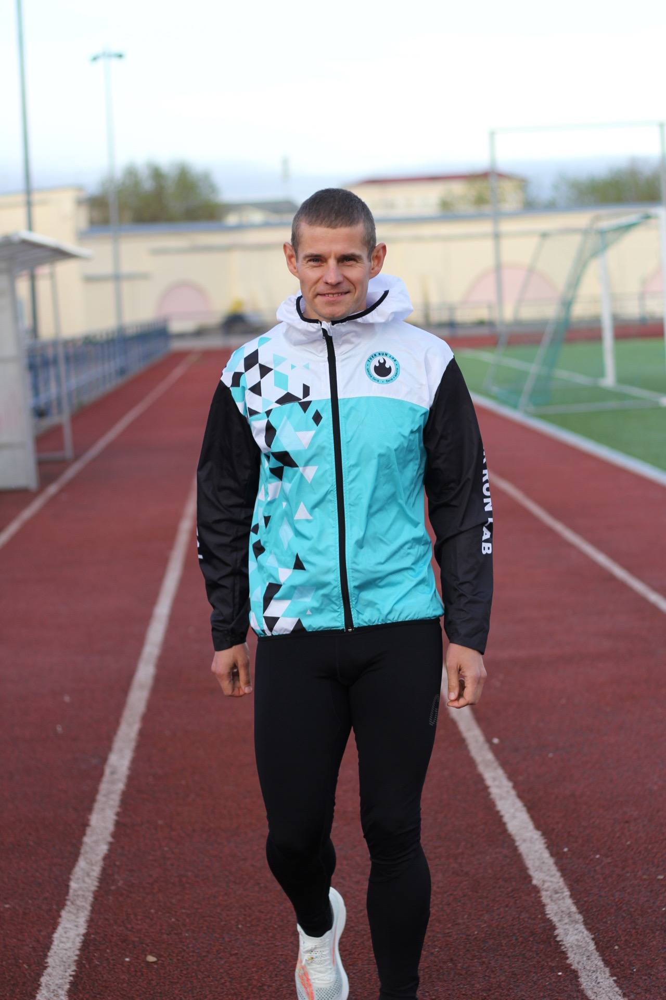

Групповые тренировки
Интервальные тренировки, СБУ, ОФП, развитие выносливости и техники бега. Каждый работает в своём темпе.
Сообщество людей, которых объединяет любовь к бегу. Тренировки, спортивные кемпы, соревнования и путешествия.
За время существования клуба мы провели десятки тренировочных мероприятий, организовали старты в Твери и создали традиции, которые объединяют участников.
С 2022 года Tver Run Lab организует спортивные кемпы в Крыму, Кисловодске, Приэльбрусье, Сочи и Дагестане.
В 2023 году клуб стал финалистом всероссийского конкурса проектов в сфере любительского спорта «Ты в игре».
Интервальные тренировки, СБУ, ОФП, развитие выносливости и техники бега. Каждый работает в своём темпе.
Дружеские пробежки по Твери, новые знакомства, атмосфера клуба и традиционные встречи после финиша.
Тренировочные путешествия в красивые места России: Крым, Кавказ, Сочи и другие локации.
Персональный план подготовки, работа над техникой и достижение ваших спортивных целей.
Марафоны, трейлы, ультрадистанции — подготовка под конкретную цель вместе с тренером.
Tver Run Lab — это не просто тренировки. Это сообщество людей, которых объединяет любовь к бегу, движение вперед и желание становиться сильнее вместе.
Уже 6 лет мы развиваем любительский бег в Твери: проводим тренировки, организуем старты, спортивные кемпы и создаём атмосферу, в которую хочется возвращаться.
У нас каждый найдёт своё направление: кто-то делает первые километры, кто-то готовится к марафону, а кто-то открывает для себя трейлы и горные ультрадистанции.

Дипломированный тренер и действующий спортсмен. Помогает начинающим бегунам сделать первые шаги, а опытным спортсменам — достигать новых целей.